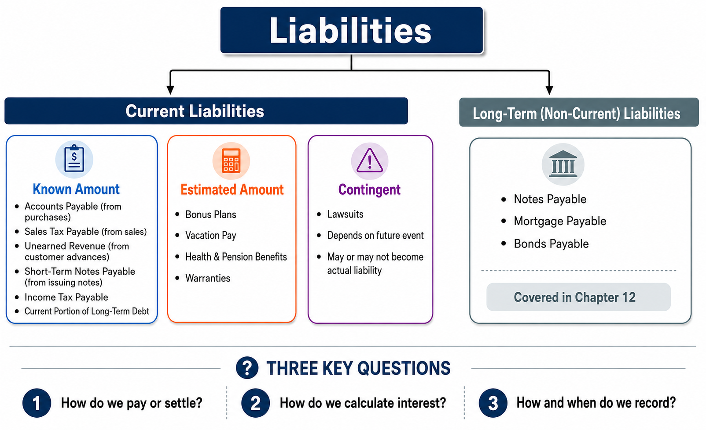
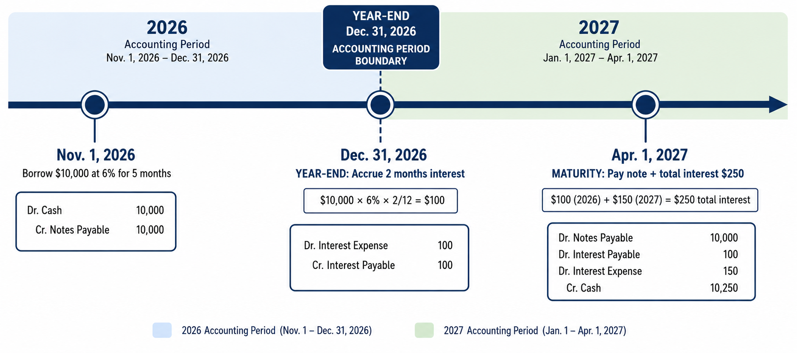
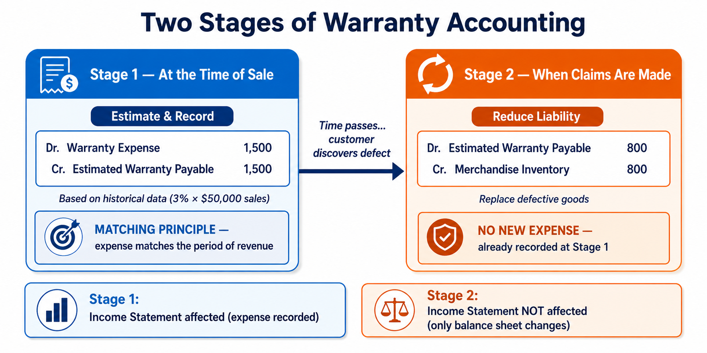
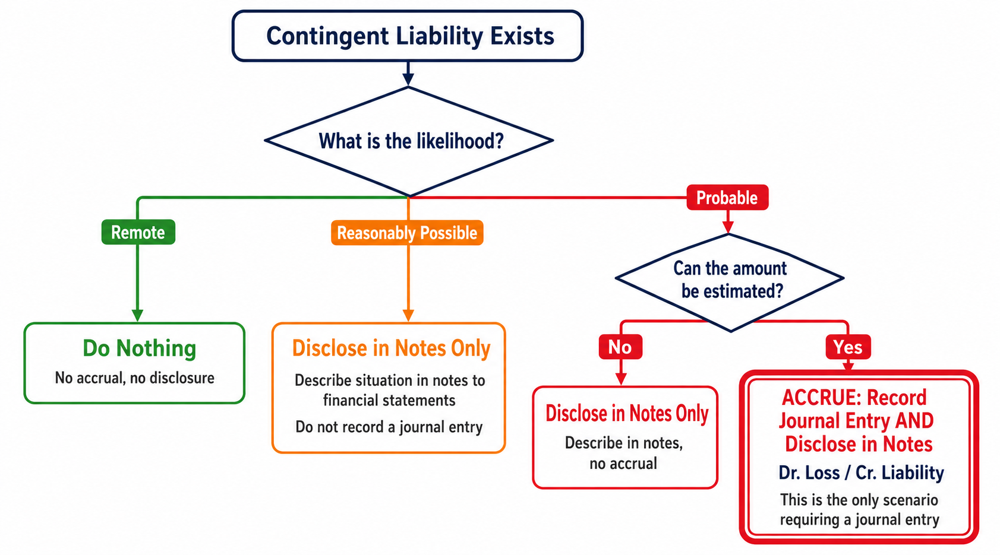
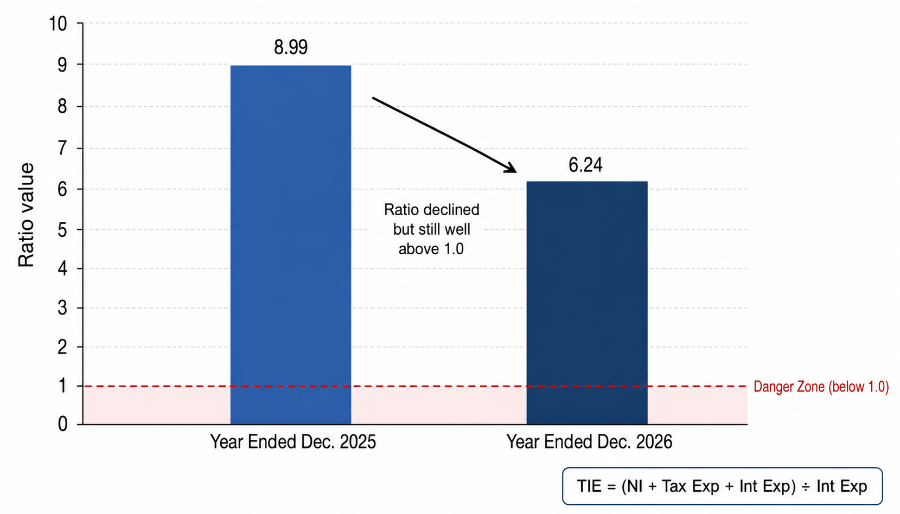

Accounting for Known Liabilities, Estimated Liabilities, Contingent Liabilities, and the Times-Interest-Earned Ratio
Imagine you own a small business. You sold products last month, so you owe sales tax to the state. You purchased inventory on a 90-day promissory note. Your employees have earned vacation time you haven’t paid yet. And a customer just threatened a lawsuit over a defective product. Each of these situations creates a different type of current liability—some with amounts you know exactly, some you must estimate, and some that may or may not become real obligations. In this chapter, we will learn how to identify, measure, and record each category so the balance sheet faithfully represents what the business owes.
Each link opens the lecture video at that topic. Timestamps are approximate — a topic may begin a few seconds before or after the mark, so step back a little if you land mid-sentence.
Before diving into the details, it helps to see the full landscape. Liabilities are debts owed to creditors. They have three defining characteristics:
To settle a liability, a company can either pay cash or provide services. For example, most payables are settled with cash, but unearned revenue is settled by performing the promised work.
Liabilities are divided into two broad categories based on when they must be settled:
Current Liabilities — Obligations that must be paid within one year or within the entity’s operating cycle, whichever is longer. If the operating cycle exceeds one year, we use the operating cycle as the cutoff; otherwise, we use one year.
Long-Term Liabilities (Non-Current) — Obligations that do not need to be paid within one year or the operating cycle. Common examples include long-term notes payable, mortgage payable, and bonds payable. These are covered in Chapter 12.
Within current liabilities, there are further distinctions based on how certain the amount is:

For every type of current liability, three questions guide our accounting:
A liability of known amount is one whose existence and dollar amount are certain. The company knows exactly how much it owes and to whom. These are the most straightforward current liabilities to account for.
Accounts payable arise from purchases of goods or services on credit. When a company buys merchandise inventory, supplies, or services and agrees to pay later, it records an accounts payable. This is the most common current liability for most businesses. The entry to record a credit purchase of inventory under the perpetual system is a debit to Merchandise Inventory and a credit to Accounts Payable.
When a business sells taxable products, it collects sales tax from customers in addition to the selling price. The sales tax collected is not revenue for the business. Instead, it is a current liability that the company must remit to the state or local government at regular intervals. The company is merely acting as a collection agent for the government.
December’s taxable sales for Smart Touch Learning total $10,000. The company collects an additional 6% sales tax, which equals $600 ($10,000 × 0.06). The customer pays a total of $10,600.
Out of the $10,600 collected, only $10,000 is the company’s sales revenue. The remaining $600 is a liability owed to the government.
When you shop at a store, the price on the tag is not the total you pay—you also pay sales tax. The seller keeps only the tagged price as revenue. The tax portion is a debt the seller owes to the government. Sales tax is never an expense for the business—it is strictly a current liability.
When Smart Touch Learning remits the tax to the government:
When a business earns income, it is subject to federal and state income taxes. Income is typically determined at the end of the year, at which point the company estimates its tax liability. Unlike sales tax, income tax is a true expense for the company—it reduces the company’s net income.
Smart Touch Learning incurs an estimated federal income tax payable of $3,780 based on its income for the period.
In the following year, when Smart Touch Learning actually pays the tax:
Notice the difference: sales tax is collected from customers and forwarded to the government—it is not an expense. Income tax, on the other hand, is an expense because it is levied on the company’s own income.
Unearned revenue (also called deferred revenue) arises when a business receives cash before providing goods or performing services. Because the company has not yet fulfilled its obligation, the advance payment is recorded as a liability. This liability can only be settled by providing the promised services—not by paying cash back (under normal circumstances).
On May 21, Smart Touch Learning receives $900 in advance for a month’s work beginning on that date.
During May, Smart Touch Learning delivers one-third of the work, earning $300 ($900 × 1/3) of the revenue. Revenue is recognized only when the performance obligation is satisfied.
A short-term note payable is a written promise by a business to pay a debt, usually involving interest, within one year or less. Notes payable differ from accounts payable in two key ways: they involve a formal written document (a promissory note), and they typically bear interest.
Promissory Note — A written agreement containing the principal amount, the maker (borrower), the payee (lender), the interest rate, and the maturity date.
Maker (Issuer) — The party who borrows money and promises to pay. The maker records Notes Payable (a liability).
Payee — The party who lends money and will receive payment. The payee records Notes Receivable (an asset).
Interest compensates the lender for the use of their money. The formula for computing interest is:
The most critical thing to remember is that the interest rate is almost always expressed as an annual rate. A “10% note” means 10% per year, not 10% over the note’s term. Because of this, the “Time” variable must represent a fraction of the year.
Example A: $2,000 note at 10% for 9 months
\( \$2{,}000 \times 10\% \times \frac{9}{12} = \$150 \)
Example B: $5,000 note at 12% for 60 days
\( \$5{,}000 \times 12\% \times \frac{60}{365} = \$98.63 \)
On May 1, 2026, Smart Touch Learning purchases merchandise inventory in exchange for a 90-day, 10% note payable for $8,000.
On July 30, 2026 (90 days later), Smart Touch Learning pays the note plus accrued interest:
The company pays a total of $8,197—the $8,000 face value plus $197 in interest. The Notes Payable account is always recorded and removed at its face value.
When a note payable spans two accounting periods, the matching principle requires an adjusting entry at year-end to accrue the interest expense that belongs to the current period.
On November 1, 2026, Smart Touch Learning borrows $10,000 from First Street Bank at 6% for five months.
Two months have passed (November and December). Interest for 2 months: $10,000 × 6% × 2/12 = $100
Note: The principal stays in Notes Payable. Accrued interest goes to a separate Interest Payable account.
Total interest for the full 5 months: $10,000 × 6% × 5/12 = $250.
Of this, $100 was already accrued in 2026. The remaining $150 belongs to 2027 (January–March).
Why is the interest split between two years? Because of the matching principle. Interest expense must be recognized in the period it is incurred, not the period it is paid. The $100 belongs to 2026 (when the money was borrowed and used for two months), and the $150 belongs to 2027 (the remaining three months).

Long-term notes payable are typically reported in the long-term liability section of the balance sheet. However, when a long-term debt is paid in installments, the company must report the portion due within the upcoming year as a current liability. The remainder continues to be classified as a long-term liability.
Suppose a company issues a note with a maturity date four years from now, and installment payments are made at the end of each year. At the end of the first year, one payment is made. At this point, the very next payment—which is due within the upcoming year—is reclassified as the current portion of long-term debt. The remaining payments due in later years stay in long-term liabilities.
Current Portion of Long-Term Debt — The amount of a long-term liability that is due within the next year. This portion must be reclassified and reported as a current liability on the balance sheet.
Sometimes a business knows that a liability exists but does not know the exact amount. In these situations, the company must reasonably estimate the amount and report it on the balance sheet. Common examples include bonus plans, vacation pay, health and pension benefits, and warranties.
Companies often promise employees a bonus based on the year’s net income. When the bonus is a percentage of net income after deducting the bonus itself, a special formula is required.
Smart Touch Learning estimates that it will pay a 5% bonus on its annual net income after deducting the bonus. The company reports net income of $315,000 before the calculation of the bonus.
The key phrase is “5% of net income after the bonus.” This means the base for our 5% calculation is the net income before the bonus minus the bonus itself.
Plugging in the numbers:
\( \text{Bonus} = \frac{\$315{,}000 \times 0.05}{1 + 0.05} = \frac{\$15{,}750}{1.05} = \$15{,}000 \)
This liability remains on the balance sheet until the bonus is actually paid to employees in the following year. Remember: when a liability increases, stockholders’ equity decreases—which is why an expense must be recognized.
Businesses typically offer vacation, health, and pension benefits to employees. A pension plan provides benefits to retired employees. As employees work and earn these benefits, the company must accrue the related expense and the corresponding liability—just like standard wages and salaries.
Smart Touch Learning estimates the cost of providing vacation benefits is $1,000 per month.
Many corporations guarantee their products against defects under warranty agreements. The matching principle requires a business to record warranty expense in the same period that the company records the related sales revenue—not in the future period when a customer actually makes a claim.
This concept is similar to the relationship between Accounts Receivable, the Allowance for Bad Debts, and Bad Debts Expense from Chapter 8. Just as a company estimates bad debts at the time of sale, it must also estimate warranty costs at the time of sale.
On June 10, 2026, Smart Touch Learning makes sales on account totaling $50,000 (cost of merchandise inventory sold: $35,000). Based on past data, the company estimates that warranty costs will be 3% of sales.
Estimated warranty expense: 3% × $50,000 = $1,500
When a customer actually makes a claim, the company does not recognize another expense—it was already estimated and recorded at the time of the original sale. Instead, the company simply reduces the previously created liability.
On June 27, 2026, customers make claims totaling $800. Smart Touch Learning replaces the defective goods.
Notice that no expense is recorded here. The expense was already recognized on June 10 when the sale occurred. This entry simply clears out the liability and reduces inventory for the replacement goods.
The warranty accounting process has two stages:
This two-step process ensures that the expense is matched to the period of the sale, satisfying the matching principle.

A contingent liability is a potential liability that depends on a future event. For the liability to be paid or settled, some specific event must occur in the future. How a business accounts for a contingent liability depends entirely on the likelihood of that future event occurring.
Contingent Liability — A potential obligation that may or may not become an actual liability, depending on the outcome of a future event beyond the company’s control. The most common example is a pending lawsuit.
The likelihood of the future event is categorized into three levels, each with different reporting requirements:
| Likelihood | Accrue (Record)? | Disclose in Notes? | Action |
|---|---|---|---|
| Remote | No | No | Do nothing. |
| Reasonably Possible | No | Yes | Describe the situation in a note to the financial statements. |
| Probable (amount cannot be estimated) | No | Yes | Describe the situation in a note to the financial statements. |
| Probable (amount can be estimated) | Yes | Yes | Record the expense and liability. Also describe in notes. |

Only when a contingent liability is both probable and estimable does the company make an actual journal entry. In all other cases, the liability is either disclosed in the notes or ignored entirely. Think of it as a two-part test: Is it likely to happen? And can we put a dollar figure on it?
Scorsese Inc. is involved in a lawsuit at December 31, 2026.
Situation A: Assume it is probable that Scorsese will be liable for $900,000 as a result of this lawsuit, and the amount can be reasonably estimated.
This entry decreases stockholders’ equity (through the loss) and increases liabilities.
Situation B: Assume it is not probable that Scorsese will be liable for any payment.
No journal entry is necessary. If the likelihood is “reasonably possible,” the company must still describe the lawsuit in the notes to the financial statements.
The times-interest-earned ratio (also called the interest-coverage ratio) measures a company’s ability to pay its interest expense from operating income. Investors and creditors use this ratio to assess the risk of lending to a company.
Why do we add taxes and interest back to net income in the numerator? Because we need to find the total earnings available to pay interest—before interest and taxes were deducted. The numerator is essentially EBIT (Earnings Before Interest and Taxes), also called Operating Income.
Think of it this way: Start with net income (what’s left after everything). Add back interest expense (because we want to see what was available before paying interest). Add back tax expense (because taxes are calculated after interest is deducted, so adding them back gives us the pre-interest, pre-tax income).
The following amounts (in millions) are from PepsiCo’s income statement:
| Year Ended Dec. 2026 | Year Ended Dec. 2025 | |
|---|---|---|
| Net Income | $7,618 | $7,120 |
| Income Tax Expense | $2,142 | $1,894 |
| Interest Expense | $1,863 | $1,128 |
Year ended December 2026:
\( \frac{\$7{,}618 + \$2{,}142 + \$1{,}863}{\$1{,}863} = \frac{\$11{,}623}{\$1{,}863} = 6.24 \)
Year ended December 2025:
\( \frac{\$7{,}120 + \$1{,}894 + \$1{,}128}{\$1{,}128} = \frac{\$10{,}142}{\$1{,}128} = 8.99 \)
Both years show a ratio well above 1, meaning PepsiCo generates far more income than needed to cover its interest. However, the ratio decreased from 8.99 to 6.24, which could reflect increased borrowing or decreased operating performance. Analysts would investigate the cause of the decline.
